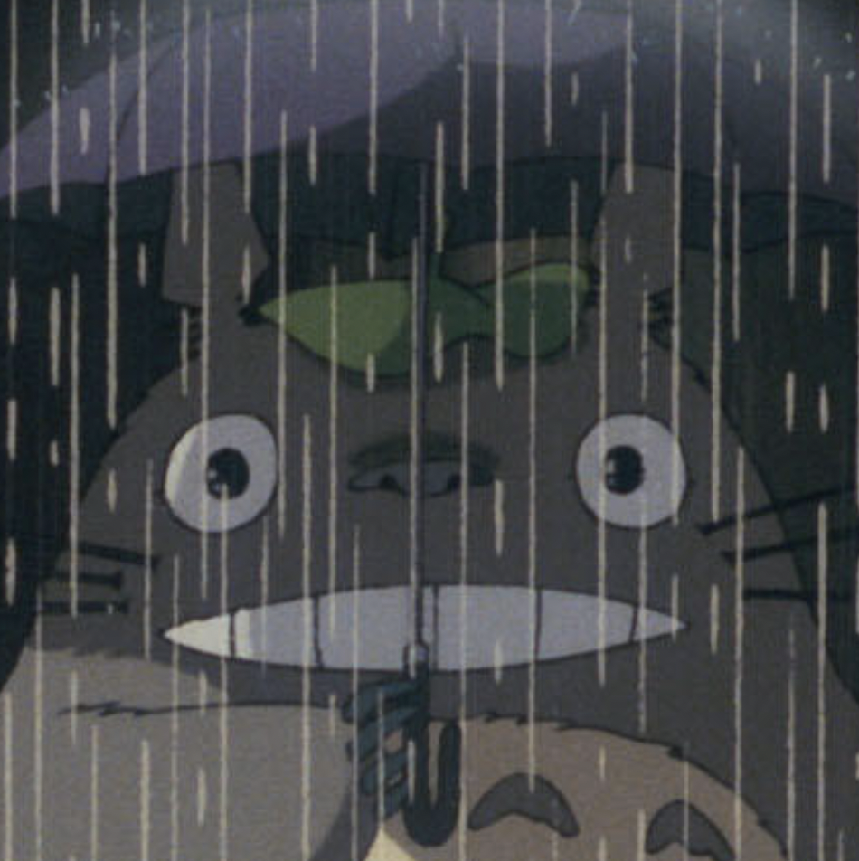

|
Takashi Otonari
I am currently a second-year master's student at Aizawa Lab, the University of Tokyo, specializing in computer vision and graphics.
My research focuses on the application of novel view synthesis techniques, such as NeRF and 3D Gaussian Splatting, particularly in the context of creating 3D content in the real world.
Email /
Google Scholar /
Github
|

|
|
Education
The University of Tokyo
M.S. in Graduate School of Information Science and Technology
2022.4 - 2024.3 (Expected)
The University of Tokyo
B.S. in Under Graduate School of Engineering
Information and Communication Engineering
2019.4 - 2022.3
National Institute of Technology (KOSEN), Akashi College
Electrical and Computer Engineering
2014.4 - 2019.3
|
Publications
International
2024
2022
Domestic (Japanese)
- 都市シーンにおける動く物体を除去した静的なNeRF表現の学習
大隣 嵩,
池畑 諭,
相澤 清晴
映像情報メディア学会 メディア工学研究会 (ITE-ME), 2024
- Neural Radnaice Fields による人や車を除いた自由視点映像合成
大隣 嵩,
池畑 諭,
相澤 清晴
第28回バーチャルリアリティ学会大会 (VRSJ), 2023
- セグメンテーションマスクを利用した動画からの静的なNeRF表現の学習
大隣 嵩,
池畑 諭,
相澤 清晴
第26回画像の認識・理解シンポジウム (MIRU), 2023
- セグメンテーションマスクを利用した動画からの静的なNeRF表現の学習
大隣 嵩,
池畑 諭,
相澤 清晴
電子情報通信学会 パターン認識・メディア理解研究会 (PRMU), 2023, PRMU研究会 月間ベストプレゼンテーション賞
- NeRFを用いた360度画像の任意視点画像合成
大隣 嵩,
池畑 諭,
相澤 清晴
第50回画像電子学会年次大会 (IIEEJ), 2022
- 360度画像のNeRFのための光線サンプリング戦略
大隣 嵩,
池畑 諭,
相澤 清晴
第25回画像の認識・理解シンポジウム (MIRU), 2022
- 360度画像に対するNeRFによる新規視点画像合成
大隣 嵩,
池畑 諭,
相澤 清晴
情報処理学会第84回全国大会 (IPSJ), 2022
|
|
Work Experience
CyberAgent
Part-time job
Jun 2023 - Mar 2024
Recruit
Internship
Oct 2022 - Nov 2022
CyberAgent
Internship
Oct 2022 - Oct 2022
Preferred Networks
Internship
Aug 2022 - Sep 2022
Saigate
Web Engineer
Apr 2020 - Jun 2021
Spacely
Internship
Aug 2019 - Mar 2024
|
|
Awards
2023.5: PRMU月間ベストプレゼンテーション賞
2022.3: 2021年度 東京大学 工学部 電子情報工学科・電気電子工学科 優秀卒業論文賞
Best Bachelor Thesis Award from the Department of Information and Communication Engineering and Department of Electrical and Electronic Engineering
2022.3: 2021年度 東京大学 工学部 工学部長賞 (学修)
Dean's Award from the Faculty of Engineering
2021.11: 統計検定1級 統計応用 (理工学) 成績優秀賞
|
|
{kind=link}